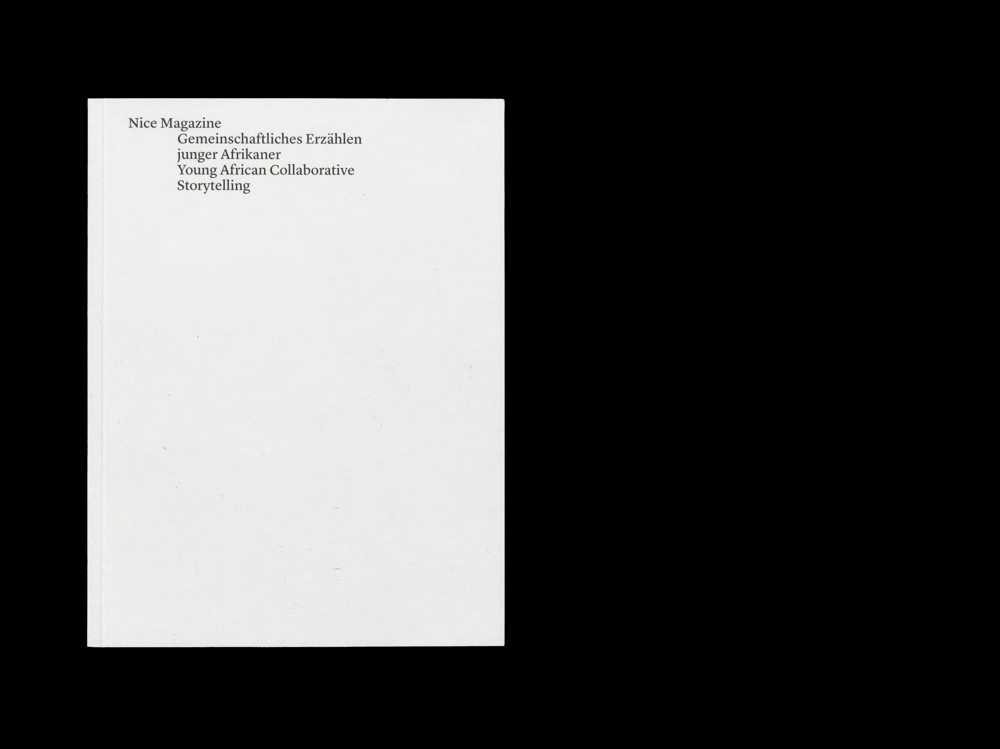

Buch, 170 mm × 225 mm, 2023
Das Konzept dieser Arbeit bindet drei Geschichten junger Afrikaner*innen fotographisch und typographisch in ein Buch ein. Die Arbeit erbrachte einen intensive Auseinandersetzung mit der Mikro und Makrotypographie. Der Designprozess wurde von Layoutskizzen, über Bildediting bis hin zur letzten Blocksatzkorrektur durchgemacht. Das gestalten von Text und Satz stand im Zentrum dieser Arbeit.
F+F Schule für Kunst und Design